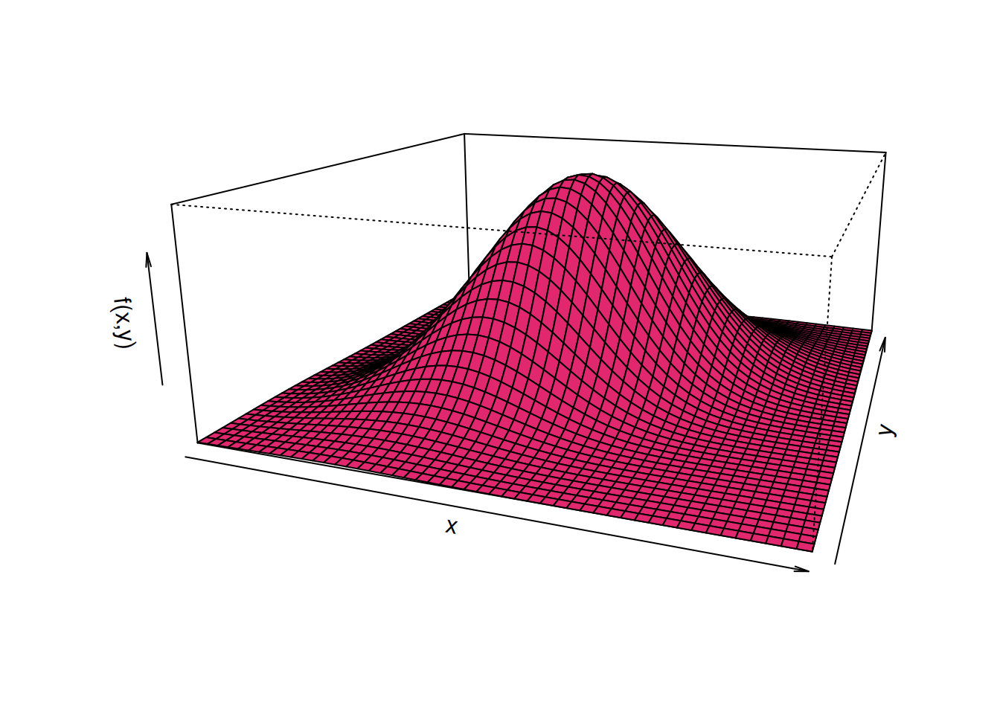
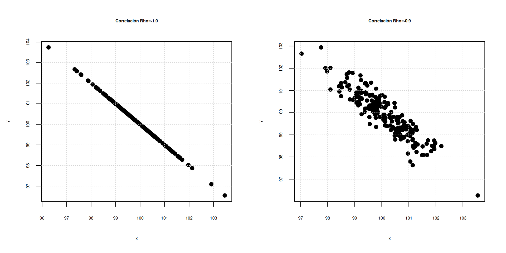
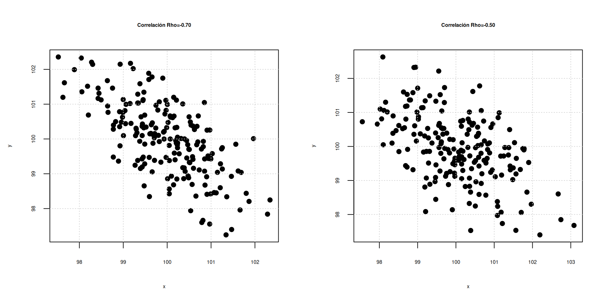
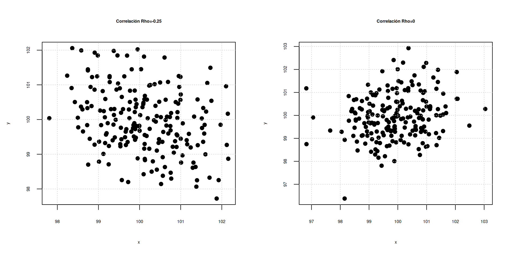
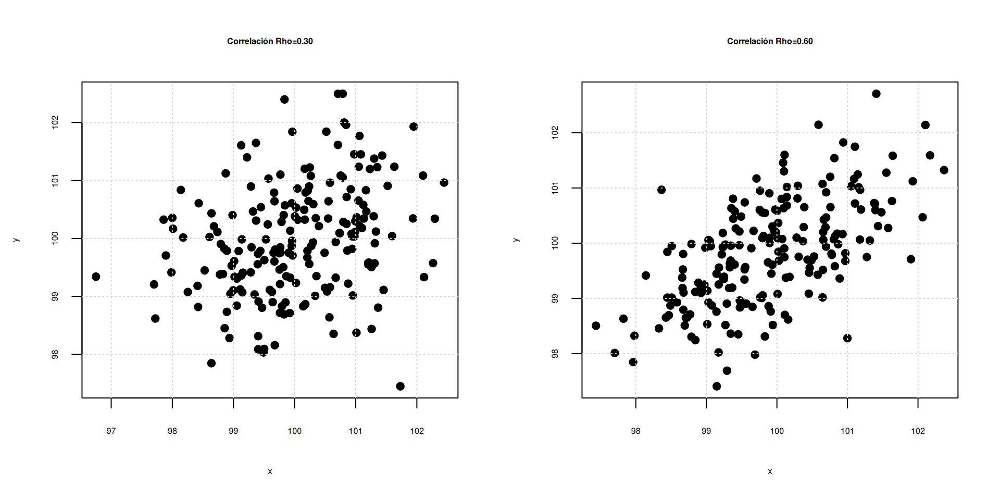
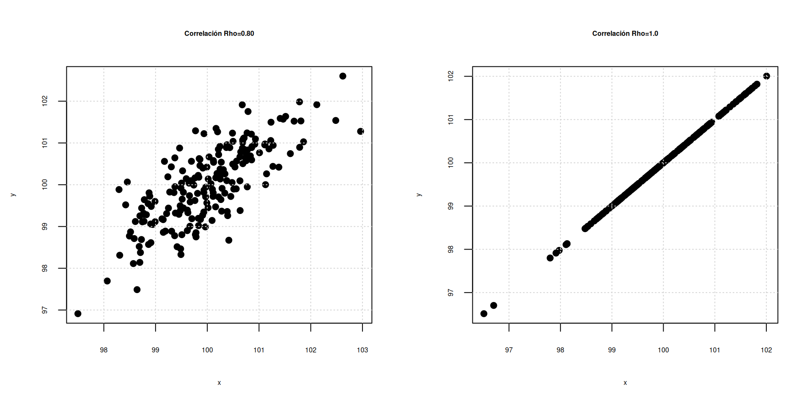

Probabilidad y Estadística
dgonzalez


Introducción
Los resultados de un experimento pueden ser causa de múltiples variables como ocurre con el precio de un producto y sus ventas, el tiempo de preparación de un examen y su nota final, la cantidad de arena y de cemento en concreto, la cantidad de abono suministrado a una planta y su producción final. En estos casos se requiere una función de densidad que describa la variación de la probabilidad de ocurrencia de ambas variables, probabilidad que describe el comportamiento conjunto de las variables.
La función que tiene en cuenta efectos múltiples de variables aleatorias se denomina distribución de probabilidad conjunta. esta función puede ser una combinación de variables continua-continua, discreta-discreta o continua-discreta, dependiendo del experimento, en el caso bivariado.
En esta guía se presentan los casos : discreta-discreta y el caso continua-continua.
Discreto-Discreto
Función de distribución de probabilidad conjunta
Si se dispone de dos variables aleatorias se puede definir distribuciones bidimensionales de forma semejante al caso unidimensional. Para el caso discreto-discreto se define:
\[f_{_{X,Y}}(x,y)=P(X=x,Y=y)\]
la cual debe cumplir con las siguientes características:
\(\displaystyle\sum\limits_{x=x_{(1)}}^{x_{(n)}}\displaystyle\sum\limits_{y=y_{(1)}}^{y_{(n)}}f_{_{X,Y}}(x,y)=1\)
\(f(x,y)\geq 0\)
El número de veces que falla una máquina \(X\) con \(R_{X}=\{1,2,3\}\) durante un dia y el número de veces en que el operario requiere llamar al técnico para su arreglo esta dado por \(Y\) con \(R_{Y}=\{1,2,3\}\). Su función de probabilidad conjunta para \(X,Y\) está dada por :
| \(x\) | ||||
|---|---|---|---|---|
| \(f(x,y)\) | 1 | 2 | 3 | |
| \(y\) | 1 | 0.05 | 0.05 | 0.10 |
| 2 | 0.05 | 0.10 | 0.35 | |
| 3 | 0 | 0.20 | 0.10 |
Para verificar que \(f(xy)\) conforme una función de distribución de probabilidad conjunta verificamos que la suma de todas las probabilidades de 1
fxy=matrix(c(0.05,0.05,0,0.05,0.10,0.20,0.10,0.35,0.10), ncol=3 )
fxy [,1] [,2] [,3]
[1,] 0.05 0.05 0.10
[2,] 0.05 0.10 0.35
[3,] 0.00 0.20 0.10sum(fxy)[1] 1El gráfico de la función de distribución conjunta se puede realizar de la siguiente forma:
x=c(0,0,0,1,1,1,2,2,2)
y=c(0,1,2,0,1,2,0,1,2)
fxy=c(0.05,0.05,0, 0.05,0.10,0.20, 0.10,0.35,0.10)
plot3D::scatter3D(x, y, fxy,
colvar = NULL,
col = c6,
pch = 19, cex = 1.5,
phi = 20, theta = 60,
zlab="f(xy)", xlab="x", ylab="y",
bty = "b2",
col.panel ="steelblue",
col.grid = "darkblue",
add_lines=TRUE)Probabilidad marginales
A partir de la función de distribución conjunta se pueden obtener las distribuciones marginales correspondientes a las variables \(X\) y \(Y\), denotadas por \(g(x)\) y \(h(y)\) respectivamente.
Si \(X\), \(Y\) son dos variables aleatorias discretas, entonces se puede definir la función de probabilidad marginal de \(X\) (función de probabilidad de \(X\) al margen de \(Y\)) como
\[g(x)=f_{_{X}}(x)=\sum_{y=y_{(1)}}^{y_{(n)}}f_{_{X,Y}}(x,y)\]
La función de probabilidad marginal de \(Y\) (función de probabilidad de \(Y\) al margen de \(X\)) como \[h(y)=f_{_{Y}}(y)=\sum_{x=x_{(1)}}^{x_{(n)}}f_{_{X,Y}}(x,y)\]
Para el ejemplo podemos establecer las funciones marginales para las variables \(X\) y \(Y\) sumando por columnas en el caso de \(Y\) y por filas en el caso de la variable \(X\)
fxy=matrix(c(0.05,0.05,0,0.05,0.10,0.20,0.10,0.35,0.10), ncol=3 )
gx=addmargins(fxy,1)
rownames(gx)=c("1","2","3","g(x)")
gx [,1] [,2] [,3]
1 0.05 0.05 0.10
2 0.05 0.10 0.35
3 0.00 0.20 0.10
g(x) 0.10 0.35 0.55Ahora para el caso de \(h(y)\)
fxy=matrix(c(0.05,0.05,0,0.05,0.10,0.20,0.10,0.35,0.10), ncol=3 )
hy=addmargins(fxy,2)
colnames(hy)=c("1","2","3","h(y)")
hy 1 2 3 h(y)
[1,] 0.05 0.05 0.10 0.2
[2,] 0.05 0.10 0.35 0.5
[3,] 0.00 0.20 0.10 0.3Probabilidad acumulada
\[F_{_{X,Y}}(x,y)=\sum_{-\infty}^{x} \sum_{-\infty}^{y} f(x,y)\]
Para el ejemplo se construye la función de distribución acumulada sumando tanto por columna com fila hasta la posición de los valores observados, por ejemplo .
\[F(2,2)= F_{_{X,Y}}(x,y)=\sum_{x=1}^{2} \sum_{y=1}^{2} f(x,y) = f(1,1) + f(1,2) + f(2,1) + f(2,2) = 0.05 + 0.05 + 0.05 + 0.10 = 0.25\]
fxy=matrix(c(0.05,0.05,0,0.05,0.10,0.20,0.10,0.35,0.10), ncol=3 )
fxy=addmargins(fxy,c(1,2))
colnames(fxy)=c("1","2","3","h(y)")
rownames(fxy)=c("1","2","3","g(x)")
fxy 1 2 3 h(y)
1 0.05 0.05 0.10 0.2
2 0.05 0.10 0.35 0.5
3 0.00 0.20 0.10 0.3
g(x) 0.10 0.35 0.55 1.0Fxy=matrix(c(0.05,0.10,0.10,0.10,0.25,0.45,0.20,0.70,1.00), ncol=3 )
colnames(Fxy)=c("1","2","3")
rownames(Fxy)=c("1","2","3")
Fxy 1 2 3
1 0.05 0.10 0.2
2 0.10 0.25 0.7
3 0.10 0.45 1.0Probabilidad condicional
En el caso de la probabilidad condicional se opera de la misma forma que se vió en el Módulo 2, en el cual se definió como :
\[P(B|A)=\dfrac{P(A \cap B)}{P(A)}\]
Para el caso de las funciones de distribución de probabilida se opera de la misma manera :
La función de densidad condicional de \(X\) dado que \(Y=y_0\) está dada por: \[\begin{equation*}
f_{_{X|Y}}(x|y_{0})=\left\lbrace
\begin{array}{ccl}
\dfrac{f_{_{X,Y}}(x,y_0)}{h(y_0)}&;& h(y_0) > 0\\
&&\\
0 &;&\mbox{en otro caso}
\end{array}
\right.
\end{equation*}\]
La función de densidad condicional
de \(Y\) dado que \(X=x_0\) está dada por: \[\begin{equation*}
f_{Y|X}(y|x_{0})=\left\lbrace
\begin{array}{ccl}
\dfrac{f_{_{X,Y}}(x_0,y)}{g(x_0)}\:&;&\:g(x_0)>0\\
&&\\
0\:&;&\:\mbox{en otro caso}
\end{array}
\right.
\end{equation*}\]
Para ilustrarlo utilizamos la función del Ejemplo 1 para la función condicional \(f(x|y=2)\)
| \(x\) | \(h(y)\) | ||||
|---|---|---|---|---|---|
| \(f(x,y)\) | 1 | 2 | 3 | ||
| \(y\) | 2 | 0.050 | 0.10 | 0.35 | 0.50 |
| \(x\) | ||||
|---|---|---|---|---|
| \(f(x|y=2)\) | 1 | 2 | 3 | |
| \(x|y=2\) | \(\dfrac{0.05}{0.50}=0.10\) | \(\dfrac{0.10}{0.50}=0.20\) | \(\dfrac{0.35}{0.50}=0.70\) |
Caso Continuo-Continuo
En el caso de variables continuas se utilizan los mismo conceptos vistos en el caso discreto-discreto, haciendo el cambio de las sumatorias por integrales definidas.
Función de densidad conjunta
En particular para \(f_{_{X,Y}}(x,y)\) definida en una región \(R\), se cumple que la integral doble de \(f_{_{X,Y}}(x,y)\) en la región \(R\) proporciona la probabilidad de que las variables \(X\) y \(Y\) asuman los valores \((x,y)\) en la región \(R\). Esta integral puede interpretarse como el volumen bajo la superficie \(f_{_{X,Y}}(x,y)\) en la región \(R\).
Lafunción de densidad conjunta para las variables \(X\) y \(Y\) \(f(x,y)\) debe cumplir las siguientes condiciones.
\(f(x,y) \geq 0\), para todo valor de \((x,y)\)
\(\int_{-\infty}^{\infty} \int_{-\infty}^{\infty} f(x,y) \:dx \:dy = 1\)
Una empresa prestadora se servicios a domicilio tienen dos lineas telefónicas para que los clientes puedan realizar sus pedidos. Sea X y Y la proporción del tiempo en que las lineas se encuentran ocupadas. La función de densidad conjunta que modela \(f(x,y)\) esta dada por:
\[f(x,y) = \left \{ \begin{matrix} \dfrac{3}{2}(x^{2}+y^{2}) & \mbox{ } 0 \leq x \leq 1\\ & \mbox{ } 0 \leq y \leq 1 \\ &\\ 0 & \mbox{ en otro caso }\end{matrix}\right. \]
Inicialmente debemos de verificar que se trata de una función de densidad
\(\displaystyle\int_{0}^{1} \displaystyle\int_{0}^{1} \dfrac{3}{2}(x^{2}+y^{2}) \:dx \:dy = \displaystyle\int_{0}^{1} \dfrac{3}{2}\Bigg( \dfrac{x^{3}}{3}+ y^{2}x \Bigg|_{0}^{1} \Bigg) \:dy\)
\(\displaystyle\int_{0}^{1} \dfrac{3}{2}\Bigg( \dfrac{{1}}{3}+ y^{2} \Bigg) \:dy = \dfrac{3}{2} \Bigg(\dfrac{y}{3} + \dfrac{y^{3}}{3} \Bigg|_{0}^{1} \Bigg) = \dfrac{3}{2}\times \dfrac{2}{3} = 1\)
library(cubature)
fxy<- function(x){3/2* (x[1]^2 + x[2]^2)}
Ifxy=adaptIntegrate(fxy,lowerLimit=c(0,0),upperLimit=c(1,1))
Ifxy$integral[1] 1Su representación gráfica

Densidad marginales
En el caso continuo- continuo las distribuciones de densidad marginales se pueden encontrar a partir de la funcion de densidad conjunta
Si \(X\) y \(Y\) son dos variables aleatorias continuas, entonces se define:
La función de densidad marginal de \(X\) como: \[g(x)=f_{_{X}}(x)=\displaystyle\int_{-\infty}^{\infty}f_{_{X,Y}}(x,y)\:dy\]
La función de densidad marginal de \(Y\) como:
\[h(y)=f_{_{Y}}(y)=\displaystyle\int_{-\infty}^{\infty}f_{_{X,Y}}(x,y)\:dx\]
Para el Ejemplo 2 tenemos:
\[g(x) = \displaystyle\int_{0}^{1} \dfrac{3}{2}(x^{2}+y^{2}) dy = \dfrac{3}{2} \Bigg( x^{2}y + \dfrac{y^{2}}{3} \Bigg) \Bigg|_{0}^{1} = \dfrac{3}{2} \Bigg(x^{2}+\dfrac{1}{3}\Bigg)\]
\[g(x) = \left \{ \begin{matrix} \dfrac{3}{2}\Bigg(x^{2}+ \dfrac{1}{3}\Bigg) & \mbox{ } 0 \leq x \leq 1\\ &\\ 0 & \mbox{ en otro caso }\end{matrix}\right. \]
\[h(y)=\displaystyle\int_{0}^{1} \dfrac{3}{2}(x^{2}+y^{2})\:dx =\dfrac{3}{2}\Bigg(\dfrac{x^{3}}{3}+y^{2} x \Bigg) \Bigg|_{0}^{1} = \dfrac{3}{2} \Bigg(\dfrac{1}{3}+y^{2}\Bigg)\]
\[h(y) = \left \{ \begin{matrix} \dfrac{3}{2}\Bigg(\dfrac{1}{3}+y^{2}\Bigg) & \mbox{ } 0 \leq x \leq 1\\ &\\ 0 & \mbox{ en otro caso }\end{matrix}\right. \]
Función de densidad de probabilidad conjunta acumulada
Para \(F_{_{X,Y}}(x,y)=P(X\leq x, Y\leq y)\) se tiene en el caso de variables aleatorias continuas
\[F_{_{X,Y}}(x,y)=\int_{-\infty}^{x} \int_{-\infty}^{y} f(s,t) \:ds \:dt\]
Propiedades de la función de distribución conjunta
\(F_{_{X,Y}}(x,y)\) es una función no decreciente.
\(F_{_{X,Y}}(x,-\infty)=0\)
\(F_{_{X,Y}}(-\infty,y)=0\)
\(F_{_{X,Y}}(-\infty,x)=0\)
\(F_{_{X,Y}}(\infty,\infty)=1\)
\(F_{_{X,Y}}(\infty,y)=F_{Y}(y)F_{_{X,Y}}(x,\infty)=F_{X}(x)\)
\(P(x_1<X\leq x_2, y_1<Y\leq y_2)=F_{_{X,Y}}(x_2,y_2)-F_{_{X,Y}}(x_1,y_2)-F_{_{X,Y}}(x_2,y_1)+F_{_{X,Y}}(x_1,y_1)\)
Para todo par de variables aleatorias continuas, si \(F_{_{XY}}\) tiene derivadas parciales de orden superior a dos, se cumple que:
\(f_{_{X,Y}}(x,y)=\frac{\partial^{2} F_{_{X,Y}}(x,y)}{\partial x \hspace{.2cm}\partial y}\)
Función de densidad condicionales
La función de densidad condicional de \(X\) dado que \(Y=y_0\) está dada por:
\[\begin{equation*} f_{_{X|Y}}(x|y_{0})=\left\lbrace \begin{array}{ccl} \dfrac{f_{_{X,Y}}(x,y_0)}{h(y_0)}&;& h(y_0) > 0\\ &&\\ 0 &;&\mbox{en otro caso} \end{array} \right. \end{equation*}\]
La función de densidad condicional de \(Y\) dado que \(X=x_0\) está dada por:
\[\begin{equation*} f_{Y|X}(y|x_{0})=\left\lbrace \begin{array}{ccl} \dfrac{f_{_{X,Y}}(x_0,y)}{g(x_0)}\:&;&\:g(x_0)>0\\ &&\\ 0\:&;&\:\mbox{en otro caso} \end{array} \right. \end{equation*}\]
Covarianza y correlación
Para definir el concepto de covarianza se requiere el concepto de valor esperado conjunto:
\[E[X,Y]=\displaystyle\sum_{R_{X}}\displaystyle\sum_{R_{Y}} xy f(x,y)\]
\[E[XY]= \displaystyle\int_{-\infty}^{\infty} \displaystyle\int_{-\infty}^{\infty} x.y.f(x,y) \,dx \,dy\]
Covarianza entre las variables \(X\),\(Y\)
\[COV[X,Y]=E[XY]-E[X]E[Y]\]
Correlación entre las variables \(X\),\(Y\) \[\rho=\displaystyle\frac{COV[XY]}{\displaystyle\sqrt{V[X].V[Y]}} \] La correlación es una medida que mide el grado de asociación lineal entre dos variables. \(-1 \leq \rho \leq 1\)
Escala para interpretación : \(\rho\)
| -1 | -0.90 | -0.75 | -0.50 | -0.25 | -0.10 | 0 | 0.10 | 0.25 | 0.50 | 0.75 | 0.90 | 1.0 |
|---|---|---|---|---|---|---|---|---|---|---|---|---|
| Negativa perfecta | Negativa muy fuerte | Negativa considerable | Negativa media | Negativa debil | Negativa muy debil | No existe correlación | Positiva muy debil | Positiva debil | Positiva media | Positiva considerable | Positiva muy fuerte | Positiva perfecta |

Independencia
Sean \(X\) y \(Y\) dos variables aleatorias discretas o continuas con función de probabilidad conjunta \(f(x,y)\) y funciones de probabilidad marginales \(g(x)\) y \(h(y)\), respectivas, entonces se dice que las variables X y Y son estadísticamente independientes si:
\[f(x,y)= g(x) h(y) \]
Problemas sugeridos
Considere como \(X\) el número que falla una máquina de control numérico (\(R_X = \{0, 1, 2\}\)) al día y \(Y\) el número de veces en que se llama a un ingeniero para restaurar el proceso (\(R_Y = \{0, 1, 2\}\)). Su función de distribución conjunta está dada por:
\[ \begin{array}{|c|c|c|c|} \hline f(x, y) & y = 0 & y = 1 & y = 2 \\ \hline x = 0 & 0.15 & 0.05 & 0 \\ x = 1 & 0 & 0.20 & 0.35 \\ x = 2 & 0 & 0.10 & 0.15 \\ \hline \end{array} \]
- Determine:
\(P(X \geq 1; Y \geq 1)\)
\(P(X = 1)\)
\(P(Y \leq 1)\)
- Encuentre \(P(Y = 1 | X = 2)\), exprese en palabras el resultado obtenido.
- Determine si existe dependencia entre estas dos variables (calcule el valor de \(\rho_{XY}\)), analice el resultado obtenido.
Un restaurante de comidas rápidas opera tanto en un local que da servicio en automovil (autoservicio) como en un segundo local que atiende a clientes que llegan caminando. En un día cualquiera, la proporción del tiempo en servicio del autoservicio se representa por \(X\), mientras que \(Y\) representa la proporción del tiempo en que el segundo local está en servicios. La función de densidad conjunta que representa el comportamiento de estas dos variables está dado por:
\[ f(x, y) = \begin{cases} \frac{2}{3} (x + 2y) & \text{si} \ 0 \leq x \leq 1, 0 \leq y \leq 1 \\ 0 & \text{en cualquier otro caso} \end{cases} \]
Determine si \(f_{XY}(x, y)\) es una función de densidad de probabilidad conjunta.
Determine:
- \(P(X \leq 0.5; Y \leq 0.3)\)
- \(P(X \leq 0.80)\)
- \(P(Y \geq 0.60)\)
- Determine \(\rho_{XY}\), interprete su resultado.
Sea \(X\) la proporción de agua (sustancia 1) y \(Y\) la proporción de alcohol (sustancia 2) que se encuentran en una muestra de una mezcla usada en la industria. La cantidad de ambas sustancias en la muestra se modela con la función \(f_{_{XY}}\) dada como:
\[\begin{equation*} f_{_{X,Y}}(x,y)=\left\lbrace \begin{array}{ccl} 2&;& 0 \leq x \leq 1; 0\leq y \leq 1 ; x + y \leq 1\\ 0&;& \text{en otro caso.} \end{array} \right. \end{equation*}\]
¿Qué porcentaje de las muestras seleccionadas aleatoriamente tienen menos del setenta y cinco por ciento de ambas sustancias?
Se han seleccionado cien preparaciones de la mezcla aleatoriamente. ¿Cuántas de estas tienen menos del cincuenta por ciento de cada sustancia?
Cien muestras contienen menos del cincuenta por ciento de la sustancia 2, ¿cuántas muestras de estas contienen menos del cuarenta por ciento de la sustancia 1?
Una mezcla seleccionada aleatoriamente contiene el cincuenta por ciento de la sustancia 2, ¿cuál es la probabilidad que contenga menos del cuarenta por ciento de la sustancia 1?
- Una empresa arma paquetes de maní y chocolate. Cada paquete contiene pesos diferentes de maní y chocolate. Para un paquete seleccionado al azar, sea \(X\) la cantidad de maní y \(Y\) la cantidad de chocolate. Los pesos están dados en kilogramos. La función de densidad conjunta de \(X\) y \(Y\) esta dada por:
\[ f_{_{X,Y}}(x,y) = \left \{ \begin{matrix} k & \hspace{.3cm} 5 \leq x \leq 9 , \hspace{.3cm} 4 \leq y \leq 9 \\ &\\ 0 & \mbox{en otro caso } \end{matrix}\right. \]
Determinar la función de densidad conjunta que modela la cantidad de maní y chocolate que contiene un paquete.
¿Qué porcentaje de las veces que se seleccionan paquetes al azar, contienen menos cantidad de maní que de chocolate?
Cien paquetes contienen menos de seis kilogramos de maní, ¿cuántos de ellos contienen menos de cinco kilogramos de chocolate?
Doscientos paquetes seleccionados aleatoriamente contienen cinco kilogramos de chocolate, ¿cuántos de ellos contienen más de ocho kilogramos de maní?